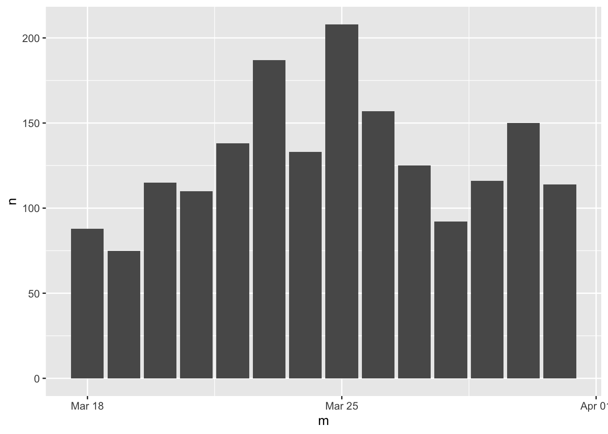

Chapter 6 Data Manipulation wity tidyverse
6.1 base to dplyr: TP Theft
library(tidyverse)
# options(stringsAsFactors = F) # default options in R ver.> 4.06.1.1 Reading data
# Read by read_csv()
# Will raise error
# Error in make.names(x) : invalid multibyte string at '<bd>s<b8><b9>'
# df <- read_csv("data/tp_theft.csv")
# read_csv() with locale = locale(encoding = "Big5")
library(readr)
df <- read_csv("data/臺北市住宅竊盜點位資訊-UTF8-BOM-1.csv")6.1.2 Cleaning data I
- Renaming variables by
select() - Generating variable year
- Generating variable month
- Retrieving area
selected_df <- df %>%
select(id = 編號,
cat = 案類,
date = `發生日期`,
time = `發生時段`,
location = `發生地點`) %>%
mutate(year = date %/% 10000) %>%
mutate(month = date %/% 100 %% 100) %>%
mutate(area = stringr::str_sub(location, 4, 6)) %>%
mutate(county = stringr::str_sub(location, 1, 3))6.1.3 Cleaning data II
- Filtering out irrelevant data records
# readr::guess_encoding("data/tp_theft.csv")
filtered_df <- selected_df %>%
# count(year) %>% View
filter(county == "臺北市") %>%
filter(year >= 104) %>%
# count(time) %>% View
# count(location) %>%
filter(!area %in% c("中和市", "板橋市"))6.1.4 Long to wide form
count()two variablesspread()spread one variable as columns to wide form
# count() then spread()
df.wide <- filtered_df %>%
count(time, area) %>%
spread(area, n, fill=0) 6.1.5 Setting time as row.name for mosaicplot
row.names(df.wide) <- df.wide$time
df.wide$time <- NULL# Specify fonts for Chinese
# par(family=('STKaiti'))
par(family=('Heiti TC Light')) # for mac
# Specify colors
colors <- c('#D0104C', '#DB4D6D', '#E83015', '#F75C2F',
'#E79460', '#E98B2A', '#9B6E23', '#F7C242',
'#BEC23F', '#90B44B', '#66BAB7', '#1E88A8')
# mosaicplot()
mosaicplot(df.wide, color=colors, border=0, off = 3,
main="Theft rate of Taipei city (region by hour)")
6.1.6 Clean version
library(readr)
# options(stringsAsFactors = F)
df <- read_csv("data/臺北市住宅竊盜點位資訊-UTF8-BOM-1.csv")
selected_df <- df %>%
select(id = 編號,
cat = 案類,
date = `發生日期`,
time = `發生時段`,
location = `發生地點`) %>%
mutate(year = date %/% 10000) %>%
mutate(month = date %/% 100 %% 100) %>%
mutate(area = stringr::str_sub(location, 4, 6)) %>%
mutate(county = stringr::str_sub(location, 1, 3))
selected_df %>% count(year)| year | n |
|---|---|
| 103 | 1 |
| 104 | 687 |
| 105 | 663 |
| 106 | 560 |
| 107 | 501 |
| 108 | 411 |
| 109 | 304 |
| 110 | 189 |
| 111 | 31 |
selected_df %>% count(time) %>% head(10)| time | n |
|---|---|
| 00~02 | 272 |
| 02~04 | 214 |
| 03~05 | 8 |
| 04~06 | 156 |
| 05~07 | 23 |
| 06~08 | 191 |
| 08~10 | 305 |
| 09~11 | 6 |
| 10~12 | 338 |
| 11~03 | 1 |
selected_df %>% arrange(time) %>% head(10)| id | cat | date | time | location | year | month | area | county |
|---|---|---|---|---|---|---|---|---|
| 2 | 住宅竊盜 | 1040101 | 00~02 | 臺北市文山區萬美里萬寧街1~30號 | 104 | 1 | 文山區 | 臺北市 |
| 3 | 住宅竊盜 | 1040101 | 00~02 | 臺北市信義區富台里忠孝東路5段295巷6弄1~30號 | 104 | 1 | 信義區 | 臺北市 |
| 6 | 住宅竊盜 | 1040102 | 00~02 | 臺北市士林區天福里1鄰忠誠路2段130巷1~30號 | 104 | 1 | 士林區 | 臺北市 |
| 12 | 住宅竊盜 | 1040105 | 00~02 | 臺北市中山區南京東路3段181~210號 | 104 | 1 | 中山區 | 臺北市 |
| 33 | 住宅竊盜 | 1040115 | 00~02 | 臺北市松山區饒河街181~210號 | 104 | 1 | 松山區 | 臺北市 |
| 74 | 住宅竊盜 | 1040131 | 00~02 | 臺北市南港區重陽路57巷1~30號 | 104 | 1 | 南港區 | 臺北市 |
| 75 | 住宅竊盜 | 1040201 | 00~02 | 臺北市北投區中心里中和街31~60號 | 104 | 2 | 北投區 | 臺北市 |
| 92 | 住宅竊盜 | 1040210 | 00~02 | 臺北市北投區大同路200巷1~30號 | 104 | 2 | 北投區 | 臺北市 |
| 95 | 住宅竊盜 | 1040212 | 00~02 | 臺北市萬華區萬大路493巷48弄1~30號 | 104 | 2 | 萬華區 | 臺北市 |
| 106 | 住宅竊盜 | 1040216 | 00~02 | 臺北市信義區吳興街269巷1~30號 | 104 | 2 | 信義區 | 臺北市 |
filtered_df <- selected_df %>%
# count(year) %>% View
filter(year >= 104) %>%
filter(!time %in% c("03~05", "05~07", "09~11", "11~13", "15~17", "17~19", "18~21", "21~23", "23~01"))
# count(time) %>% View
# count(location) %>%
# filter(!area %in% c("中和市", "板橋市"))
df.wide <- filtered_df %>%
count(time, area) %>%
spread(area, n, fill=0) %>%
as.data.frame()
row.names(df.wide) <- df.wide$time
df.wide$time <- NULL
par(family=('Heiti TC Light')) # for mac
# Specify colors
colors <- c('#D0104C', '#DB4D6D', '#E83015', '#F75C2F',
'#E79460', '#E98B2A', '#9B6E23', '#F7C242',
'#BEC23F', '#90B44B', '#66BAB7', '#1E88A8')
# mosaicplot()
mosaicplot(df.wide, color=colors, border=0, off = 3,
main="Theft rate of Taipei city (region by hour)") 
6.2 空值（NA）處理
許多統計資料都會有不同程度的NA（缺失值、遺漏值）。缺失值產生的原因不一，可能有以下原因：
- 資料運算的時候產生的填空值。例如
spread()和pivot_wider()經常會產生NA，也經常會指定值（例如0）來取代可能產生的NA。 - 資料紀錄的時候遺漏某些時間點的資料。
- 開放資料在開放時已經被整理成階層化、易於展示、一般人易懂的表格型態。此時，若將其讀入也會產生非常大量的
NA。例如本章節所要提到的政府各部會預算比例。 - 紀錄資料筆數非常龐大、來源眾多、紀錄時間不一時，雖然有很多紀錄，但這些紀錄必須要被對齊、刪減，才能夠獲得有意義的可計算資料。例如本章節會提到的世界各國疫苗注射資料。
6.2.1 表格重整：政府預算
raw <- readxl::read_excel("data/111B歲出政事別預算表.xls", skip=3, col_names = F)
raw %>% head(10)| …1 | …2 | …3 | …4 | …5 | …6 | …7 | …8 | …9 |
|---|---|---|---|---|---|---|---|---|
| 科 目 | NA | NA | NA | NA | 本年度預算數 | 上年度預算數 | 前年度決算數 | 本年度與上年度 比 較 |
| 款 | 項 | 目 | 節 | 名 稱 及 編 號 | NA | NA | NA | NA |
| NA | NA | NA | NA | 合 計 | 2262064189 | 2135896877 | 2039353355.829 | 126167312 |
| NA | NA | NA | NA | (1.一般政務支出) | 210137299 | 202634617 | 190777048.02900001 | 7502682 |
| 1 | NA | NA | NA | 3100000000 國務支出 | 1210301 | 1186955 | 1176955.1259999999 | 23346 |
| NA | 1 | NA | NA | 3102010000 總統府 | 1004797 | 978916 | 997305.54599999997 | 25881 |
| NA | NA | 1 | NA | 3102010100 一般行政 | 920526 | 896334 | 882112.75600000005 | 24192 |
| NA | NA | 2 | NA | 3102010200 國務機要 | 30000 | 30000 | 29993.006000000001 |
|
| NA | NA | 3 | NA | 3102010300 國家慶典 | 15760 | 15760 | 45578.949000000001 |
|
| NA | NA | 4 | NA | 3102010400 研究發展 | 5332 | 5332 | 6720.1840000000002 |
|
基本清理
- 重新命名欄位名稱
- 刪去被當成表格標題的多於列（通常是前兩三列）
slice(-(1:2))。 - 觀察資料，「款」可以說是支出大類的代號，例如總統府、行政支出、立法支出、軍事支出、教育支出等。「科」為該單位底下的部門或者項目，例如「行政支出」下有行政院、主計總處支出等。更底下的細類「目」並非本例的分析對象，所以可以刪除。所以，如果款、科均為空值的話，代表其為更細的「目」。因此篩去款科為空值的所有項目。
filter(!is.na(款) | !is.na(科)) - 將機構id和機構名稱切分開來，視覺化的時候只會用到機構名稱。
separate(機構, c("oid", "org"), sep="\n")
names(raw) <- c("款", "科", "目", "節", "機構", "本年度預算", "上年度預算", "上年度決算", "預算差")
cleaned <- raw %>%
slice(-(1:2)) %>%
filter(!is.na(款) | !is.na(科)) %>%
select(-目, -節) %>%
separate(機構, c("oid", "org"), sep="\n")
cleaned %>% head(10)| 款 | 科 | oid | org | 本年度預算 | 上年度預算 | 上年度決算 | 預算差 |
|---|---|---|---|---|---|---|---|
| 1 | NA | 3100000000 | 國務支出 | 1210301 | 1186955 | 1176955.1259999999 | 23346 |
| NA | 1 | 3102010000 | 總統府 | 1004797 | 978916 | 997305.54599999997 | 25881 |
| NA | 2 | 3102100000 | 國家安全會議 | 205504 | 208039 | 179649.57999999999 | -2535 |
| 2 | NA | 3200000000 | 行政支出 | 6134276 | 5836481 | 5477154.5810000002 | 297795 |
| NA | 1 | 3203010000 | 行政院 | 1256043 | 1286646 | 1268295.23 | -30603 |
| NA | 2 | 3203100000 | 主計總處 | 1604967 | 1478173 | 1578781.8940000001 | 126794 |
| NA | 3 | 3203300000 | 人事行政總處 | 555363 | 573447 | 489516.17700000003 | -18084 |
| NA | 4 | 3203340000 | 公務人力發展學院 | 244346 | 239453 | 229852.26199999999 | 4893 |
| NA | 5 | 3203420000 | 檔案管理局 | 787429 | 646081 | 443133.20799999998 | 141348 |
| NA | 6 | 3203900000 | 大陸委員會 | 900896 | 900866 | 792491.22199999995 | 30 |
6.2.1.1 NA處理
觀察一下現在的資料，發現，行政院、主計總處等均屬於行政支出，但行政支出卻自有一列。依照長表格的格式來說，應嘗試把「款」作為機構的變項。所以將款的數字取代為「行政支出」等支出類別的名稱。
cleaned %>% mutate(款 = ifelse(!is.na(款), org, 款)) %>%
head(10)| 款 | 科 | oid | org | 本年度預算 | 上年度預算 | 上年度決算 | 預算差 |
|---|---|---|---|---|---|---|---|
| 國務支出 | NA | 3100000000 | 國務支出 | 1210301 | 1186955 | 1176955.1259999999 | 23346 |
| NA | 1 | 3102010000 | 總統府 | 1004797 | 978916 | 997305.54599999997 | 25881 |
| NA | 2 | 3102100000 | 國家安全會議 | 205504 | 208039 | 179649.57999999999 | -2535 |
| 行政支出 | NA | 3200000000 | 行政支出 | 6134276 | 5836481 | 5477154.5810000002 | 297795 |
| NA | 1 | 3203010000 | 行政院 | 1256043 | 1286646 | 1268295.23 | -30603 |
| NA | 2 | 3203100000 | 主計總處 | 1604967 | 1478173 | 1578781.8940000001 | 126794 |
| NA | 3 | 3203300000 | 人事行政總處 | 555363 | 573447 | 489516.17700000003 | -18084 |
| NA | 4 | 3203340000 | 公務人力發展學院 | 244346 | 239453 | 229852.26199999999 | 4893 |
| NA | 5 | 3203420000 | 檔案管理局 | 787429 | 646081 | 443133.20799999998 | 141348 |
| NA | 6 | 3203900000 | 大陸委員會 | 900896 | 900866 | 792491.22199999995 | 30 |
接下來，希望能夠在「款==NA」的地方填入該欄的「前一個值」例如行政支出。查詢一下（關鍵字如「Fill in NA column values with the last value that was not NA」）還真的有這樣的函式可以操作。
library(zoo)
cleaned %>%
mutate(款 = ifelse(!is.na(款), org, 款)) %>%
mutate(款 = zoo::na.locf(款)) %>%
head(10)| 款 | 科 | oid | org | 本年度預算 | 上年度預算 | 上年度決算 | 預算差 |
|---|---|---|---|---|---|---|---|
| 國務支出 | NA | 3100000000 | 國務支出 | 1210301 | 1186955 | 1176955.1259999999 | 23346 |
| 國務支出 | 1 | 3102010000 | 總統府 | 1004797 | 978916 | 997305.54599999997 | 25881 |
| 國務支出 | 2 | 3102100000 | 國家安全會議 | 205504 | 208039 | 179649.57999999999 | -2535 |
| 行政支出 | NA | 3200000000 | 行政支出 | 6134276 | 5836481 | 5477154.5810000002 | 297795 |
| 行政支出 | 1 | 3203010000 | 行政院 | 1256043 | 1286646 | 1268295.23 | -30603 |
| 行政支出 | 2 | 3203100000 | 主計總處 | 1604967 | 1478173 | 1578781.8940000001 | 126794 |
| 行政支出 | 3 | 3203300000 | 人事行政總處 | 555363 | 573447 | 489516.17700000003 | -18084 |
| 行政支出 | 4 | 3203340000 | 公務人力發展學院 | 244346 | 239453 | 229852.26199999999 | 4893 |
| 行政支出 | 5 | 3203420000 | 檔案管理局 | 787429 | 646081 | 443133.20799999998 | 141348 |
| 行政支出 | 6 | 3203900000 | 大陸委員會 | 900896 | 900866 | 792491.22199999995 | 30 |
太神奇了！看見沒！接下來只要把「科 is NA」的那些該大類支出總數的紀錄給刪除，資料就乾淨了。最後就只會剩下一些資料清理的功伕。完整程式碼可以看下一節。
6.2.1.2 完整程式碼
library(zoo)
# raw <- readxl::read_excel("data/111B歲出政事別預算總表.xls")
raw <- readxl::read_excel("data/111B歲出政事別預算表.xls", skip=3, col_names = F)
names(raw) <- c("款", "科", "目", "節", "機構", "本年度預算", "上年度預算", "上年度決算", "預算差")
# raw$款 <- na.locf(raw$款)
cleaned <- raw %>%
filter(!is.na(款) | !is.na(科)) %>%
slice(-(1:2)) %>%
select(-目, -節) %>%
separate(機構, c("oid", "org"), sep="\n") %>%
mutate(款 = ifelse(!is.na(款), org, 款)) %>%
mutate(款 = zoo::na.locf(款)) %>%
filter(!is.na(科)) %>%
select(-科) %>% type_convert() %>%
mutate(上年度預算 = as.numeric(上年度預算),
上年度決算 = as.integer(上年度決算),
預算差 = as.numeric(預算差)) %>%
replace_na(list(上年度預算 = 0, 上年度決算 = 0)) %>%
mutate(預算差 = 本年度預算 - 上年度預算)6.2.2 對齊資料。世界各國疫苗接種比例
https://ourworldindata.org/covid-vaccinations - https://github.com/owid/covid-19-data/tree/master/public/data/vaccinations
評估資料概況後可發現這個資料集每一列就是某一個國家某一天所上傳的紀錄。所以，一個國家會有很多列。乍聽之下不難處理，但事實上每個國家不會每天上傳、也不會固定某一天上傳、哪一週、哪一個月開始上傳也不一定，也有可能會漏掉一些月份或週次。所以，制定出一個時間單位（例如週、月）、然後延著時間軸將資料「對齊」，讓每個國家在每個時間單位都有資料。但每個國家疫情發展程度不一，所以也不可能有一個完美的對齊，所以通常會建議就所要觀察的國家進行對齊即可。至於想刪除的那些資料列，幾乎都可以當成是所謂的缺失值。
raw <- read_csv("data/vaccinations.csv")
dim(raw)## [1] 99442 16raw %>% head(20)| location | iso_code | date | total_vaccinations | people_vaccinated | people_fully_vaccinated | total_boosters | daily_vaccinations_raw | daily_vaccinations | total_vaccinations_per_hundred | people_vaccinated_per_hundred | people_fully_vaccinated_per_hundred | total_boosters_per_hundred | daily_vaccinations_per_million | daily_people_vaccinated | daily_people_vaccinated_per_hundred |
|---|---|---|---|---|---|---|---|---|---|---|---|---|---|---|---|
| Afghanistan | AFG | 2021-02-22 | 0 | 0 | NA | NA | NA | NA | 0.00 | 0.00 | NA | NA | NA | NA | NA |
| Afghanistan | AFG | 2021-02-23 | NA | NA | NA | NA | NA | 1367 | NA | NA | NA | NA | 34 | 1367 | 0.003 |
| Afghanistan | AFG | 2021-02-24 | NA | NA | NA | NA | NA | 1367 | NA | NA | NA | NA | 34 | 1367 | 0.003 |
| Afghanistan | AFG | 2021-02-25 | NA | NA | NA | NA | NA | 1367 | NA | NA | NA | NA | 34 | 1367 | 0.003 |
| Afghanistan | AFG | 2021-02-26 | NA | NA | NA | NA | NA | 1367 | NA | NA | NA | NA | 34 | 1367 | 0.003 |
| Afghanistan | AFG | 2021-02-27 | NA | NA | NA | NA | NA | 1367 | NA | NA | NA | NA | 34 | 1367 | 0.003 |
| Afghanistan | AFG | 2021-02-28 | 8200 | 8200 | NA | NA | NA | 1367 | 0.02 | 0.02 | NA | NA | 34 | 1367 | 0.003 |
| Afghanistan | AFG | 2021-03-01 | NA | NA | NA | NA | NA | 1580 | NA | NA | NA | NA | 40 | 1580 | 0.004 |
| Afghanistan | AFG | 2021-03-02 | NA | NA | NA | NA | NA | 1794 | NA | NA | NA | NA | 45 | 1794 | 0.005 |
| Afghanistan | AFG | 2021-03-03 | NA | NA | NA | NA | NA | 2008 | NA | NA | NA | NA | 50 | 2008 | 0.005 |
| Afghanistan | AFG | 2021-03-04 | NA | NA | NA | NA | NA | 2221 | NA | NA | NA | NA | 56 | 2221 | 0.006 |
| Afghanistan | AFG | 2021-03-05 | NA | NA | NA | NA | NA | 2435 | NA | NA | NA | NA | 61 | 2435 | 0.006 |
| Afghanistan | AFG | 2021-03-06 | NA | NA | NA | NA | NA | 2649 | NA | NA | NA | NA | 66 | 2649 | 0.007 |
| Afghanistan | AFG | 2021-03-07 | NA | NA | NA | NA | NA | 2862 | NA | NA | NA | NA | 72 | 2862 | 0.007 |
| Afghanistan | AFG | 2021-03-08 | NA | NA | NA | NA | NA | 2862 | NA | NA | NA | NA | 72 | 2862 | 0.007 |
| Afghanistan | AFG | 2021-03-09 | NA | NA | NA | NA | NA | 2862 | NA | NA | NA | NA | 72 | 2862 | 0.007 |
| Afghanistan | AFG | 2021-03-10 | NA | NA | NA | NA | NA | 2862 | NA | NA | NA | NA | 72 | 2862 | 0.007 |
| Afghanistan | AFG | 2021-03-11 | NA | NA | NA | NA | NA | 2862 | NA | NA | NA | NA | 72 | 2862 | 0.007 |
| Afghanistan | AFG | 2021-03-12 | NA | NA | NA | NA | NA | 2862 | NA | NA | NA | NA | 72 | 2862 | 0.007 |
| Afghanistan | AFG | 2021-03-13 | NA | NA | NA | NA | NA | 2862 | NA | NA | NA | NA | 72 | 2862 | 0.007 |
6.2.2.1 按月對齊資料
首先要挑選要拿來做視覺化的資料欄位。這邊所選擇的是people_fully_vaccinated_per_hundred，也就是每百人接種二劑疫苗的人數，相當於接種二劑疫苗的百分比。
接下來便是空值處理，如果這個欄位沒有數值的就直接用drop_na()篩除即可。
這個範例希望把該資料視覺化為Y軸為年、X軸為時間的熱區圖。但整個疫情資料橫亙二年多，如果以週為彙整單位的話，那勢必X軸會有近百個資料點。所以打算以「月」為單位來彙整這些資料，因為且資料中也有不少國家缺數週的資料，所以以月為彙整單位是一個權衡後的選擇（仍可以嘗試用週作為彙整單位試試看）。所以，運用了lubridate::floor_date()來將日期資料轉換為月，例如2022-03-12和2022-03-14都會被轉換為2022-03-01。
依照國家與時間群組彙整資料。接下來就依照各國的月份來做彙整（注意，此時會有不少資料同屬於某個月的資料）。彙整的方法是，經過對「日期」（不是對月）做排序後，僅留下第一筆資料，也就是僅留下最接近月份開頭的資料。經由這樣的操作，會使得各國在每個月剛好留下一筆資料，如下面程式的範例輸出。
library(lubridate)
fullvaccinated <- raw %>% select(country = location, date,
people_fully_vaccinated_per_hundred) %>%
drop_na(people_fully_vaccinated_per_hundred) %>%
mutate(m = floor_date(date, unit = "month")) %>%
group_by(country, m) %>%
arrange(date) %>%
slice(1) %>%
ungroup() %>%
select(-date)
fullvaccinated %>% head(10)| country | people_fully_vaccinated_per_hundred | m |
|---|---|---|
| Afghanistan | 0.14 | 2021-05-01 |
| Afghanistan | 0.36 | 2021-06-01 |
| Afghanistan | 0.48 | 2021-07-01 |
| Afghanistan | 1.08 | 2021-08-01 |
| Afghanistan | 8.00 | 2021-11-01 |
| Afghanistan | 9.42 | 2021-12-01 |
| Afghanistan | 9.56 | 2022-01-01 |
| Afghanistan | 9.82 | 2022-02-01 |
| Afghanistan | 10.75 | 2022-03-01 |
| Afghanistan | 11.38 | 2022-04-01 |
6.2.2.2 處理遺漏資料的月份
接下來要處理的是資料紀錄的缺漏值。每個國家登錄資料的時間是很不一致的，某些國家會缺某些月份，或者某些國家是在某年某月以後才開始登記，或者最近沒在登記。但這個範例所要視覺化的資料是接種疫苗的比例，所以即使是現在沒在登記了，但接種比例應列計最後一次資料紀錄的接種比例。
首先我要讓每個國家都有所有月份，這裡應會有某個函式可以做到這件事，但我沒查到這個函式。不過我可以很技巧性地用pivot_wider()（spread()）和pivot_longer()（gather()）來完成這件事。spread()在展開時對於缺少的資料項可以自動補NA。所以我就只要把資料的月份展開後再gather()回來後，就可以自動讓每個國家所擁有的月份資料一致。以下為spread()後的結果，可以觀察到每一列是一個國家，每一欄是個月份，如果當月都沒資料紀錄，那該月的值就會是空值。可以看見空值是相當多的，也就是在那段時間都沒有資料紀錄。
fullvaccinated %>%
spread(m, people_fully_vaccinated_per_hundred, fill=NA) %>%
head(10)| country | 2020-12-01 | 2021-01-01 | 2021-02-01 | 2021-03-01 | 2021-04-01 | 2021-05-01 | 2021-06-01 | 2021-07-01 | 2021-08-01 | 2021-09-01 | 2021-10-01 | 2021-11-01 | 2021-12-01 | 2022-01-01 | 2022-02-01 | 2022-03-01 | 2022-04-01 | 2022-05-01 |
|---|---|---|---|---|---|---|---|---|---|---|---|---|---|---|---|---|---|---|
| Afghanistan | NA | NA | NA | NA | NA | 0.14 | 0.36 | 0.48 | 1.08 | NA | NA | 8.00 | 9.42 | 9.56 | 9.82 | 10.75 | 11.38 | NA |
| Africa | NA | NA | 0.00 | 0.02 | 0.30 | 0.36 | 0.63 | 1.15 | 1.66 | 2.86 | 4.40 | 5.93 | 7.24 | 9.15 | 10.78 | 12.30 | 15.32 | 16.56 |
| Albania | NA | NA | 0.00 | NA | NA | 6.32 | 10.21 | 14.18 | 18.46 | 22.58 | 27.87 | 31.04 | 33.62 | 36.53 | 40.26 | 41.73 | 42.47 | NA |
| Algeria | NA | NA | NA | NA | NA | NA | NA | NA | 1.62 | 6.72 | 10.65 | 10.92 | 12.45 | 12.99 | 13.46 | 13.70 | 14.53 | NA |
| Andorra | NA | NA | NA | 1.52 | 5.80 | 6.07 | 14.14 | 34.92 | 45.99 | 61.69 | 62.45 | NA | 65.07 | 68.58 | 68.79 | 68.99 | 69.04 | NA |
| Angola | NA | NA | NA | NA | NA | 0.12 | 1.11 | 1.66 | 2.09 | 2.71 | 3.57 | 5.31 | 9.05 | 11.77 | 14.38 | 16.53 | 18.06 | NA |
| Anguilla | NA | NA | NA | NA | 5.18 | 29.25 | 36.45 | 47.34 | 59.27 | 59.36 | 60.54 | 60.54 | 60.91 | 61.37 | 61.82 | 63.13 | 65.28 | NA |
| Antigua and Barbuda | NA | NA | NA | NA | NA | 2.61 | 18.41 | 28.23 | 31.33 | 35.51 | 43.54 | 51.60 | 57.72 | 59.81 | 61.27 | 62.12 | NA | NA |
| Argentina | 0 | 0 | 0.26 | 0.69 | 1.56 | 2.24 | 6.68 | 9.71 | 16.35 | 34.72 | 50.97 | 58.37 | 67.18 | 73.25 | 77.69 | 80.13 | 81.21 | 81.64 |
| Armenia | NA | NA | NA | NA | NA | NA | 0.40 | 1.03 | 1.74 | 3.64 | 5.73 | 9.33 | 17.42 | 24.08 | 28.94 | 31.97 | 33.02 | NA |
在以下的範例輸出可以看到gather()後的結果。注意，需要照國家和月份來排序後才便於觀察。
fullvaccinated %>%
spread(m, people_fully_vaccinated_per_hundred, fill=NA) %>%
gather(month, perc, -country) %>%
arrange(country, month) %>% head(20)| country | month | perc |
|---|---|---|
| Afghanistan | 2020-12-01 | NA |
| Afghanistan | 2021-01-01 | NA |
| Afghanistan | 2021-02-01 | NA |
| Afghanistan | 2021-03-01 | NA |
| Afghanistan | 2021-04-01 | NA |
| Afghanistan | 2021-05-01 | 0.14 |
| Afghanistan | 2021-06-01 | 0.36 |
| Afghanistan | 2021-07-01 | 0.48 |
| Afghanistan | 2021-08-01 | 1.08 |
| Afghanistan | 2021-09-01 | NA |
| Afghanistan | 2021-10-01 | NA |
| Afghanistan | 2021-11-01 | 8.00 |
| Afghanistan | 2021-12-01 | 9.42 |
| Afghanistan | 2022-01-01 | 9.56 |
| Afghanistan | 2022-02-01 | 9.82 |
| Afghanistan | 2022-03-01 | 10.75 |
| Afghanistan | 2022-04-01 | 11.38 |
| Afghanistan | 2022-05-01 | NA |
| Africa | 2020-12-01 | NA |
| Africa | 2021-01-01 | NA |
接下來是最技巧性的部分。就接種比例而言是個遞增數列，所以如果這個月有紀錄，但下個月沒紀錄（NA），那下個月的資料應以這個月的資料來替代。此時可以用zoo套件的na.locf()來填NA值，其填NA值的規則是用最後一筆非NA值的資料來替代NA值。但要注意的是，因為資料紀錄可能到第六個月或第七個月才開始紀錄，但在前面的月份都沒資料紀錄，也就是說那些NA值沒有更早的資料紀錄權充填充值。原本na.locf()會把這些找不到參考對象的NA值直接刪除，但我們可以在裡面加一個參數使其不會被刪除（na.locf(perc, na.rm = F)）。
最後，就把這些沒被刪除也沒得參考的早期資料項，用replace_na()填上0即可。
fullvaccinated %>%
spread(m, people_fully_vaccinated_per_hundred, fill=NA) %>%
gather(month, perc, -country) %>%
arrange(country, month) %>%
group_by(country) %>%
arrange(month) %>%
mutate(perc = zoo::na.locf(perc, na.rm = F)) %>%
ungroup() %>%
arrange(country, month) %>% head(10)| country | month | perc |
|---|---|---|
| Afghanistan | 2020-12-01 | NA |
| Afghanistan | 2021-01-01 | NA |
| Afghanistan | 2021-02-01 | NA |
| Afghanistan | 2021-03-01 | NA |
| Afghanistan | 2021-04-01 | NA |
| Afghanistan | 2021-05-01 | 0.14 |
| Afghanistan | 2021-06-01 | 0.36 |
| Afghanistan | 2021-07-01 | 0.48 |
| Afghanistan | 2021-08-01 | 1.08 |
| Afghanistan | 2021-09-01 | 1.08 |
最後，就把這些沒被刪除也沒得參考的早期資料項，用replace_na()填上0即可。大功告成。
fullvaccinated %>%
spread(m, people_fully_vaccinated_per_hundred, fill=NA) %>%
gather(month, perc, -country) %>%
arrange(country, month) %>%
group_by(country) %>%
arrange(month) %>%
mutate(perc = zoo::na.locf(perc, na.rm = F)) %>%
ungroup() %>%
arrange(country, month) %>%
replace_na(list(perc=0)) %>%
arrange(country, month) %>% head(10)| country | month | perc |
|---|---|---|
| Afghanistan | 2020-12-01 | 0.00 |
| Afghanistan | 2021-01-01 | 0.00 |
| Afghanistan | 2021-02-01 | 0.00 |
| Afghanistan | 2021-03-01 | 0.00 |
| Afghanistan | 2021-04-01 | 0.00 |
| Afghanistan | 2021-05-01 | 0.14 |
| Afghanistan | 2021-06-01 | 0.36 |
| Afghanistan | 2021-07-01 | 0.48 |
| Afghanistan | 2021-08-01 | 1.08 |
| Afghanistan | 2021-09-01 | 1.08 |
6.2.2.3 完整程式碼
library(lubridate)
raw <- read_csv("data/vaccinations.csv")
fullvaccinated <- raw %>% select(country = location, date,
people_fully_vaccinated_per_hundred) %>%
drop_na(people_fully_vaccinated_per_hundred) %>%
mutate(m = floor_date(date, unit = "month")) %>%
group_by(country, m) %>%
arrange(date) %>%
slice(1) %>%
ungroup() %>%
select(-date)
vperc_by_month <- fullvaccinated %>%
spread(m, people_fully_vaccinated_per_hundred, fill=NA) %>%
gather(month, perc, -country) %>%
arrange(country, month) %>%
group_by(country) %>%
arrange(month) %>%
mutate(perc = zoo::na.locf(perc, na.rm = F)) %>%
ungroup() %>%
arrange(country, month) %>%
replace_na(list(perc=0))6.3 類別資料分析
這個範例涵括了在做問卷分析時常用的處理步驟。最核心的步驟是將文字陳述的類別資料轉換為便於後續運算的factor或數值資料。如果類別數量過多的時候，在這個過程會順便進行重新分組。例如依照年齡組把填答者分為老年、中壯年、青少年、兒童四組。
raw <- read_rds("data/tfc_survey.rds")6.3.1 清理資料
通常問卷會分為兩種類型的資料，一種是人口統計用的基本資料（如性別、年齡組、教育程度）、另一種是問卷本身要問的題項。以下是常見的問卷型態，包含把年齡從20歲開始每五年作為一組，70歲以上則歸類為一組，共會有十一組。而教育程度則常分為五至六組，但在問卷設計的時候，通常會需要增加「拒答」的選項。如果問卷中包含政黨意識形態，就必須要決定要以黨派作為類別變項，或者以意識形態做順序尺度。以下即為一個順序尺度的案例，從「非常接近泛綠」到「非常接近泛藍」共五個等第，但另增「拒答」選項。
dt <- raw %>%
mutate(QA3 = ordered(QA3, levels=c("20-24", "25-29", "30-34", "35-39",
"40-44", "45-49", "50-54", "55-59",
"60-64", "65-69", "70及以上"))) %>%
mutate(QA3_lv = ordered(QA3,
levels=c("20-24", "25-29", "30-34", "35-39",
"40-44", "45-49", "50-54", "55-59",
"60-64", "65-69", "70及以上"),
labels = c("青年", "青年", "壯年", "壯年",
"壯年", "中年", "中年", "中年",
"中年", "老年", "老年"))) %>%
mutate(QA4 = ordered(QA4,
levels=c("拒答", "國小及以下", "初中、國中",
"高中、高職", "大專（專科與大學）",
"研究所及以上"),
labels=c("拒答", "國小以下", "國中",
"高中職", "大專", "研究所以上"))) %>%
mutate(QASide=ordered(QASide,
exclude="拒答",
levels=c("非常接近泛綠", "接近泛綠",
"都不接近", "接近泛藍", "非常接近泛藍")))6.3.1.1 轉類別變項為factor
在一開始清理資料的時候，會建議先把類別變數（通常是文字型態）轉為factor型態。常用的函式是用mutate()搭配ordered()來改變變數型態。ordered()會照類別順序來標定該factor所對應到的數字。可以用as.integer()將factor轉為整數後就可以看到各類別的順序。
dt$QA3[1:10]## [1] 25-29 35-39 35-39 20-24 45-49 25-29 30-34 20-24 20-24 55-59
## 11 Levels: 20-24 < 25-29 < 30-34 < 35-39 < 40-44 < 45-49 < 50-54 < ... < 70及以上as.integer(dt$QA3[1:10])## [1] 2 4 4 1 6 2 3 1 1 86.3.1.2 排除某些類別值
如果有某些類別變數的值（如「拒答」）不想被編入factor，可以在reorder()中加入exclude的參數指定不想被編入類別值。
dt$QASide[1:10]## [1] 非常接近泛綠 接近泛藍 接近泛綠 接近泛綠 非常接近泛綠
## [6] 非常接近泛藍 接近泛綠 接近泛綠 接近泛藍 接近泛綠
## Levels: 非常接近泛綠 < 接近泛綠 < 都不接近 < 接近泛藍 < 非常接近泛藍as.integer(dt$QASide[1:10])## [1] 1 4 2 2 1 5 2 2 4 26.3.1.3 群組化類別值
如果有某些類別變數的類別過多，希望再次群組化為較少的組別，如重新群組各年齡層為青年、壯年、中年與老年四個尺度。此時除了levels參數外，可以另外加入labels的參數，指定每個類別變數值所要對應到的群組。以下為群組後的結果，仔細觀察剩下多少個尺度。
dt$QA3[1:10]## [1] 25-29 35-39 35-39 20-24 45-49 25-29 30-34 20-24 20-24 55-59
## 11 Levels: 20-24 < 25-29 < 30-34 < 35-39 < 40-44 < 45-49 < 50-54 < ... < 70及以上as.integer(dt$QA3[1:10])## [1] 2 4 4 1 6 2 3 1 1 8dt$QA3_lv[1:10]## [1] 青年 壯年 壯年 青年 中年 青年 壯年 青年 青年 中年
## Levels: 青年 < 壯年 < 中年 < 老年6.3.2 尺度轉類別指標
- Q7 請問您會不會受到假消息影響？
- Q8 請問您認為其他人會不會受到假消息的影響？
對於Q7、Q8的問題是詢問填答者認為自己或他人會不會受到假消息影響，並從「一點也不會」、「不會」、「會」到「絕對會」共分四個等第。Q7分別是「81, 446, 650, 39」、Q8分別是「5, 58, 803, 350」。相較於Q7，Q8的分佈略為左傾，亦即傾向於認為其他人較容易受影響。此時如果想要分析Q7和Q8間的關係，由於各有四個等第，其交叉分析表會有16個項目，相當難以分析。
dt2 <- dt %>%
mutate(Q7 = ordered(Q7, levels=c("一點也不會", "不會", "會", "絕對會"))) %>%
mutate(Q8 = ordered(Q8, levels=c("一點也不會", "不會", "會", "絕對會"))) %>%
mutate(Q7_3rd = as.numeric(Q8)-as.numeric(Q7)) %>%
mutate(Q7_3rd_lv = ifelse(Q7 %in% c("一點也不會", "不會") & Q8 %in% c("會", "絕對會"), "高", "低")) %>%
mutate(Q7_3rd_lv = ordered(Q7_3rd_lv, levels=c("低", "高")))這時候一種策略是把這兩題視為順序尺度變數，然後把兩題的分數相減。相減後的分數從「-1, 0, 1, 2, 3」各有「12, 482, 600, 103, 19」，不難猜到會是一個較為集中的分佈，後續僅能當作順序尺度或連續變項來分析，不適合找一個閾值轉類別變項。
另一種策略是，分別先把Q7與Q8的「一點也不會」和「不會」群組為「不會」、再把「會」與「絕對會」群組為「會」，這樣Q7與Q8的交叉分析表會變成2X2的分析表，雖然群組數量比較少，但別忘記Q7的填答結果集中在會與不會、而Q8為一個較為偏右的分佈，集中在「會」和「絕對會」。Q8勢必會造成比例不均的分組。
dt2 %>% count(as.integer(Q8)-as.integer(Q7))| as.integer(Q8) - as.integer(Q7) | n |
|---|---|
| -1 | 12 |
| 0 | 482 |
| 1 | 600 |
| 2 | 103 |
| 3 | 19 |
最後這題所採行的策略是，做高、低第三人效果分組，也就是根據認為自己「一點也不會」、「不會」受影響，而他人「會」或「絕對會」受影響的重新群組為「高第三人效果組」，其他則為「低第三人效果組」。亦即，分組的一句是在對自己與他人的認知上，無模糊空間的分組方法（也就是認為自己至少不會，和認為別人應該會）。
dt2 %>% count(Q7_3rd_lv)| Q7_3rd_lv | n |
|---|---|
| 低 | 746 |
| 高 | 470 |
6.3.3 Cross-tabulating
(xtb <- xtabs(~QA3_lv + Q7_3rd_lv, data=dt2))| 低 | 高 | |
|---|---|---|
| 青年 | 178 | 110 |
| 壯年 | 370 | 199 |
| 中年 | 157 | 134 |
| 老年 | 41 | 27 |
(chi2 <- chisq.test(xtb))##
## Pearson's Chi-squared test
##
## data: xtb
## X-squared = 10.017, df = 3, p-value = 0.01842vcd::assocstats(xtb)## X^2 df P(> X^2)
## Likelihood Ratio 9.9301 3 0.01917
## Pearson 10.0173 3 0.01842
##
## Phi-Coefficient : NA
## Contingency Coeff.: 0.09
## Cramer's V : 0.091print(round(chi2$observed, 2))## Q7_3rd_lv
## QA3_lv 低 高
## 青年 178 110
## 壯年 370 199
## 中年 157 134
## 老年 41 27print(round(chi2$expected, 2))## Q7_3rd_lv
## QA3_lv 低 高
## 青年 176.68 111.32
## 壯年 349.07 219.93
## 中年 178.52 112.48
## 老年 41.72 26.28print(round(chi2$residuals, 2))## Q7_3rd_lv
## QA3_lv 低 高
## 青年 0.10 -0.12
## 壯年 1.12 -1.41
## 中年 -1.61 2.03
## 老年 -0.11 0.14par(family="Heiti TC Light")
gplots::balloonplot(t(xtb), xlab="第三人效果", ylab="年齡組", main="",
dotsize=4/max(strwidth(40),strheight(40)),
text.size=1.5,label.size=2,
rowmar=1, colmar=1)
par(family="Heiti TC Light")
corrplot::corrplot(chi2$residuals, is.corr = F)
xtb %>% as_tibble() %>%
group_by(QA3_lv) %>%
mutate(fill = if_else(n == max(n), "orangered", "skyblue")) %>%
ungroup() %>%
mutate(QA3_lv = ordered(QA3_lv,
levels=c("青年", "壯年", "中年", "老年"))) %>%
arrange(desc(QA3_lv)) %>%
ggplot() + aes(y = QA3_lv, x=Q7_3rd_lv, color = fill, size = n) +
scale_size_area(max_size=70, guide = "none") +
geom_point(alpha=0.7) +
scale_color_manual(values = c("orangered", "skyblue"), guide = "none") +
geom_text(aes(
label=n,
vjust=1.3,
size=10
), color="black",) + theme_minimal() +
theme(text = element_text(family="Heiti TC Light"),
title = element_text(family="Heiti TC Light"))
6.4 時間軸的視覺化
library(tidyverse)
library(lubridate)
# options(stringsAsFactors = F) # default option in R > 4.06.4.1 文字轉時間
- Convert “character time” to R date.time object (POSIXct)
ptturl <- "https://github.com/P4CSS/R4CSSData/raw/main/ptt_hang_posts.csv"
raw <- read.csv(url(ptturl))
clean <- raw %>%
mutate(ptime = as.POSIXct(strptime(ptime, "%Y-%m-%dT%H:%M:%SZ", tz = "ASIA/Taipeiw")))
raw <- read_csv(url(ptturl))
?read_csv| read_delim | R Documentation |
Read a delimited file (including CSV and TSV) into a tibble
Description
read_csv() and read_tsv() are special cases of the more general
read_delim(). They’re useful for reading the most common types of
flat file data, comma separated values and tab separated values,
respectively. read_csv2() uses ; for the field separator and , for the
decimal point. This format is common in some European countries.
Usage
read_delim(
file,
delim = NULL,
quote = "\"",
escape_backslash = FALSE,
escape_double = TRUE,
col_names = TRUE,
col_types = NULL,
col_select = NULL,
id = NULL,
locale = default_locale(),
na = c("", "NA"),
quoted_na = TRUE,
comment = "",
trim_ws = FALSE,
skip = 0,
n_max = Inf,
guess_max = min(1000, n_max),
name_repair = "unique",
num_threads = readr_threads(),
progress = show_progress(),
show_col_types = should_show_types(),
skip_empty_rows = TRUE,
lazy = should_read_lazy()
)
read_csv(
file,
col_names = TRUE,
col_types = NULL,
col_select = NULL,
id = NULL,
locale = default_locale(),
na = c("", "NA"),
quoted_na = TRUE,
quote = "\"",
comment = "",
trim_ws = TRUE,
skip = 0,
n_max = Inf,
guess_max = min(1000, n_max),
name_repair = "unique",
num_threads = readr_threads(),
progress = show_progress(),
show_col_types = should_show_types(),
skip_empty_rows = TRUE,
lazy = should_read_lazy()
)
read_csv2(
file,
col_names = TRUE,
col_types = NULL,
col_select = NULL,
id = NULL,
locale = default_locale(),
na = c("", "NA"),
quoted_na = TRUE,
quote = "\"",
comment = "",
trim_ws = TRUE,
skip = 0,
n_max = Inf,
guess_max = min(1000, n_max),
progress = show_progress(),
name_repair = "unique",
num_threads = readr_threads(),
show_col_types = should_show_types(),
skip_empty_rows = TRUE,
lazy = should_read_lazy()
)
read_tsv(
file,
col_names = TRUE,
col_types = NULL,
col_select = NULL,
id = NULL,
locale = default_locale(),
na = c("", "NA"),
quoted_na = TRUE,
quote = "\"",
comment = "",
trim_ws = TRUE,
skip = 0,
n_max = Inf,
guess_max = min(1000, n_max),
progress = show_progress(),
name_repair = "unique",
num_threads = readr_threads(),
show_col_types = should_show_types(),
skip_empty_rows = TRUE,
lazy = should_read_lazy()
)
Arguments
file
|
Either a path to a file, a connection, or literal data (either a single string or a raw vector).
Files ending in
Literal data is most useful for examples and tests. To be recognised as
literal data, the input must be either wrapped with
Using a value of |
delim
|
Single character used to separate fields within a record. |
quote
|
Single character used to quote strings. |
escape_backslash
|
Does the file use backslashes to escape special
characters? This is more general than |
escape_double
|
Does the file escape quotes by doubling them?
i.e. If this option is |
col_names
|
Either
If
If
Missing ( |
col_types
|
One of
If
Column specifications created by Alternatively, you can use a compact string representation where each character represents one column:
|
col_select
|
Columns to include in the results. You can use the same
mini-language as |
id
|
The name of a column in which to store the file path. This is
useful when reading multiple input files and there is data in the file
paths, such as the data collection date. If |
locale
|
The locale controls defaults that vary from place to place.
The default locale is US-centric (like R), but you can use
|
na
|
Character vector of strings to interpret as missing values. Set this
option to |
quoted_na
|
|
comment
|
A string used to identify comments. Any text after the comment characters will be silently ignored. |
trim_ws
|
Should leading and trailing whitespace (ASCII spaces and tabs) be trimmed from each field before parsing it? |
skip
|
Number of lines to skip before reading data. If |
n_max
|
Maximum number of lines to read. |
guess_max
|
Maximum number of lines to use for guessing column types.
See |
name_repair
|
Handling of column names. The default behaviour is to
ensure column names are
This argument is passed on as |
num_threads
|
The number of processing threads to use for initial
parsing and lazy reading of data. If your data contains newlines within
fields the parser should automatically detect this and fall back to using
one thread only. However if you know your file has newlines within quoted
fields it is safest to set |
progress
|
Display a progress bar? By default it will only display
in an interactive session and not while knitting a document. The automatic
progress bar can be disabled by setting option |
show_col_types
|
If |
skip_empty_rows
|
Should blank rows be ignored altogether? i.e. If this
option is |
lazy
|
Read values lazily? By default the file is initially only
indexed and the values are read lazily when accessed. Lazy reading is
useful interactively, particularly if you are only interested in a subset
of the full dataset. Note, if you later write to the same file you read
from you need to set |
![[Deprecated]](../help/figures/lifecycle-deprecated.svg)
Value
A tibble(). If there are parsing problems, a warning will alert you.
You can retrieve the full details by calling problems() on your dataset.
Examples
# Input sources -------------------------------------------------------------
# Read from a path
read_csv(readr_example("mtcars.csv"))
read_csv(readr_example("mtcars.csv.zip"))
read_csv(readr_example("mtcars.csv.bz2"))
## Not run:
# Including remote paths
read_csv("https://github.com/tidyverse/readr/raw/main/inst/extdata/mtcars.csv")
## End(Not run)
# Or directly from a string with `I()`
read_csv(I("x,y\n1,2\n3,4"))
# Column types --------------------------------------------------------------
# By default, readr guesses the columns types, looking at `guess_max` rows.
# You can override with a compact specification:
read_csv(I("x,y\n1,2\n3,4"), col_types = "dc")
# Or with a list of column types:
read_csv(I("x,y\n1,2\n3,4"), col_types = list(col_double(), col_character()))
# If there are parsing problems, you get a warning, and can extract
# more details with problems()
y <- read_csv(I("x\n1\n2\nb"), col_types = list(col_double()))
y
problems(y)
# File types ----------------------------------------------------------------
read_csv(I("a,b\n1.0,2.0"))
read_csv2(I("a;b\n1,0;2,0"))
read_tsv(I("a\tb\n1.0\t2.0"))
read_delim(I("a|b\n1.0|2.0"), delim = "|")
t <- "2019-04-12T00:48:19Z"
class(t)## [1] "character"?strptime| strptime | R Documentation |
Date-time Conversion Functions to and from Character
Description
Functions to convert between character representations and objects of
classes “POSIXlt” and “POSIXct” representing calendar
dates and times.
Usage
## S3 method for class 'POSIXct'
format(x, format = "", tz = "", usetz = FALSE, ...)
## S3 method for class 'POSIXlt'
format(x, format = "", usetz = FALSE,
digits = getOption("digits.secs"), ...)
## S3 method for class 'POSIXt'
as.character(x, ...)
strftime(x, format = "", tz = "", usetz = FALSE, ...)
strptime(x, format, tz = "")
Arguments
x
|
An object to be converted: a character vector for
|
tz
|
A character string specifying the time zone to be used for
the conversion. System-specific (see |
format
|
A character string. The default for the |
…
|
Further arguments to be passed from or to other methods. |
usetz
|
logical. Should the time zone abbreviation be appended
to the output? This is used in printing times, and more reliable
than using |
digits
|
integer determining the |
Details
The format and as.character methods and strftime
convert objects from the classes “POSIXlt” and
“POSIXct” to character vectors.
strptime converts character vectors to class “POSIXlt”:
its input x is first converted by as.character.
Each input string is processed as far as necessary for the format
specified: any trailing characters are ignored.
strftime is a wrapper for format.POSIXlt, and it and
format.POSIXct first convert to class “POSIXlt” by
calling as.POSIXlt (so they also work for class
“Date”). Note that only that conversion depends on the
time zone.
Since R version 4.2.0, that as.POSIXlt() conversion now treats
the non-finite numeric -Inf, Inf, NA and NaN
differently (where previously all were treated as NA) and also
the format() method for POSIXlt now treats these different
non-finite times and dates analogously to type double.
The usual vector re-cycling rules are applied to x and
format so the answer will be of length of the longer of these
vectors.
Locale-specific conversions to and from character strings are used
where appropriate and available. This affects the names of the days
and months, the AM/PM indicator (if used) and the separators in output
formats such as %x and %X, via the setting of
the LC_TIME locale category. The ‘current
locale’ of the descriptions might mean the locale in use at the start
of the R session or when these functions are first used. (For input,
the locale-specific conversions can be changed by calling
Sys.setlocale with category LC_TIME (or
LC_ALL). For output, what happens depends on the OS but
usually works.)
The details of the formats are platform-specific, but the following are
likely to be widely available: most are defined by the POSIX standard.
A conversion specification is introduced by %, usually
followed by a single letter or O or E and then a single
letter. Any character in the format string not part of a conversion
specification is interpreted literally (and %% gives
%). Widely implemented conversion specifications include
-
%a -
Abbreviated weekday name in the current locale on this platform. (Also matches full name on input: in some locales there are no abbreviations of names.)
-
%A -
Full weekday name in the current locale. (Also matches abbreviated name on input.)
-
%b -
Abbreviated month name in the current locale on this platform. (Also matches full name on input: in some locales there are no abbreviations of names.)
-
%B -
Full month name in the current locale. (Also matches abbreviated name on input.)
-
%c -
Date and time. Locale-specific on output,
“%a %b %e %H:%M:%S %Y”on input. -
%C -
Century (00–99): the integer part of the year divided by 100.
-
%d -
Day of the month as decimal number (01–31).
-
%D -
Date format such as
%m/%d/%y: the C99 standard says it should be that exact format (but not all OSes comply). -
%e -
Day of the month as decimal number (1–31), with a leading space for a single-digit number.
-
%F -
Equivalent to %Y-%m-%d (the ISO 8601 date format).
-
%g -
The last two digits of the week-based year (see
%V). (Accepted but ignored on input.) -
%G -
The week-based year (see
%V) as a decimal number. (Accepted but ignored on input.) -
%h -
Equivalent to
%b. -
%H -
Hours as decimal number (00–23). As a special exception strings such as ‘24:00:00’ are accepted for input, since ISO 8601 allows these.
-
%I -
Hours as decimal number (01–12).
-
%j -
Day of year as decimal number (001–366): For input, 366 is only valid in a leap year.
-
%m -
Month as decimal number (01–12).
-
%M -
Minute as decimal number (00–59).
-
%n -
Newline on output, arbitrary whitespace on input.
-
%p -
AM/PM indicator in the locale. Used in conjunction with
%Iand not with%H. An empty string in some locales (for example on some OSes, non-English European locales including Russia). The behaviour is undefined if used for input in such a locale.Some platforms accept
%Pfor output, which uses a lower-case version (%pmay also use lower case): others will outputP. -
%r -
For output, the 12-hour clock time (using the locale’s AM or PM): only defined in some locales, and on some OSes misleading in locales which do not define an AM/PM indicator. For input, equivalent to
%I:%M:%S %p. -
%R -
Equivalent to
%H:%M. -
%S -
Second as integer (00–61), allowing for up to two leap-seconds (but POSIX-compliant implementations will ignore leap seconds).
-
%t -
Tab on output, arbitrary whitespace on input.
-
%T -
Equivalent to
%H:%M:%S. -
%u -
Weekday as a decimal number (1–7, Monday is 1).
-
%U -
Week of the year as decimal number (00–53) using Sunday as the first day 1 of the week (and typically with the first Sunday of the year as day 1 of week 1). The US convention.
-
%V -
Week of the year as decimal number (01–53) as defined in ISO 8601. If the week (starting on Monday) containing 1 January has four or more days in the new year, then it is considered week 1. Otherwise, it is the last week of the previous year, and the next week is week 1. (Accepted but ignored on input.)
-
%w -
Weekday as decimal number (0–6, Sunday is 0).
-
%W -
Week of the year as decimal number (00–53) using Monday as the first day of week (and typically with the first Monday of the year as day 1 of week 1). The UK convention.
-
%x -
Date. Locale-specific on output,
“%y/%m/%d”on input. -
%X -
Time. Locale-specific on output,
“%H:%M:%S”on input. -
%y -
Year without century (00–99). On input, values 00 to 68 are prefixed by 20 and 69 to 99 by 19 – that is the behaviour specified by the 2018 POSIX standard, but it does also say ‘it is expected that in a future version the default century inferred from a 2-digit year will change’.
-
%Y -
Year with century. Note that whereas there was no zero in the original Gregorian calendar, ISO 8601:2004 defines it to be valid (interpreted as 1BC): see https://en.wikipedia.org/wiki/0_(year). However, the standards also say that years before 1582 in its calendar should only be used with agreement of the parties involved.
For input, only years
0:9999are accepted. -
%z -
Signed offset in hours and minutes from UTC, so
-0800is 8 hours behind UTC. Values up to+1400are accepted. (Standard only for output. For input R currently supports it on all platforms.) -
%Z -
(Output only.) Time zone abbreviation as a character string (empty if not available). This may not be reliable when a time zone has changed abbreviations over the years.
Where leading zeros are shown they will be used on output but are
optional on input. Names are matched case-insensitively on input:
whether they are capitalized on output depends on the platform and the
locale. Note that abbreviated names are platform-specific (although
the standards specify that in the ‘C’ locale they must be the
first three letters of the capitalized English name: this convention
is widely used in English-language locales but for example the French
month abbreviations are not the same on any two of Linux, macOS, Solaris
and Windows). Knowing what the abbreviations are is essential
if you wish to use %a, %b or %h as part of an
input format: see the examples for how to check.
When %z or %Z is used for output with an
object with an assigned time zone an attempt is made to use the values
for that time zone — but it is not guaranteed to succeed.
Not in the standards and less widely implemented are
-
%k -
The 24-hour clock time with single digits preceded by a blank.
-
%l -
The 12-hour clock time with single digits preceded by a blank.
-
%s -
(Output only.) The number of seconds since the epoch.
-
%+ -
(Output only.) Similar to
%c, often“%a %b %e %H:%M:%S %Z %Y”. May depend on the locale.
For output there are also %O[dHImMUVwWy] which may emit
numbers in an alternative locale-dependent format (e.g., roman
numerals), and %E[cCyYxX] which can use an alternative
‘era’ (e.g., a different religious calendar). Which of these
are supported is OS-dependent. These are accepted for input, but with
the standard interpretation.
Specific to R is %OSn, which for output gives the seconds
truncated to 0 <= n <= 6 decimal places (and if %OS is
not followed by a digit, it uses the setting of
getOption(“digits.secs”), or if that is unset, n =
0). Further, for strptime %OS will input seconds
including fractional seconds. Note that %S does not read
fractional parts on output.
The behaviour of other conversion specifications (and even if other
character sequences commencing with % are conversion
specifications) is system-specific. Some systems document that the
use of multi-byte characters in format is unsupported: UTF-8
locales are unlikely to cause a problem.
Value
The format methods and strftime return character vectors
representing the time. NA times are returned as
NA_character_. The elements are restricted to 256 bytes, plus
a time zone abbreviation if usetz is true. (On known platforms
longer strings are truncated at 255 or 256 bytes, but this is not
guaranteed by the C99 standard.)
strptime turns character representations into an object of
class “POSIXlt”. The time zone is used to set the
isdst component and to set the “tzone” attribute if
tz != ““. If the specified time is invalid (for example
‘“2010-02-30 08:00”’) all the components of the result are
NA. (NB: this does means exactly what it says – if it is an
invalid time, not just a time that does not exist in some time zone.)
Printing years
Everyone agrees that years from 1000 to 9999 should be printed with 4 digits, but the standards do not define what is to be done outside that range. For years 0 to 999 most OSes pad with zeros or spaces to 4 characters, and Linux outputs just the number.
OS facilities will probably not print years before 1 CE (aka 1 AD)
‘correctly’ (they tend to assume the existence of a year 0: see
https://en.wikipedia.org/wiki/0_(year), and some OSes get them
completely wrong). Common formats are -45 and -045.
Years after 9999 and before -999 are normally printed with five or more characters.
Some platforms support modifiers from POSIX 2008 (and others). On
Linux the format “%04Y” assures a minimum of four characters
and zero-padding. The internal code (as used on Windows and by
default on macOS) uses zero-padding by default, and formats
%_4Y and %_Y can be used for space padding and no
padding.
Time zone offsets
Offsets from GMT (also known as UTC) are part of the conversion
between timezones and to/from class “POSIXct”, but cause
difficulties as they are often computed incorrectly.
They conventionally have the opposite sign from time-zone
specifications (see Sys.timezone): positive values are
East of the meridian. Although there have been time zones with
offsets like 00:09:21 (Paris in 1900), and 00:44:30 (Liberia until
1972), offsets are usually treated as whole numbers of minutes, and
are most often seen in RFC 5322 email headers in forms like
-0800 (e.g., used on the Pacific coast of the USA in winter).
Format %z can be used for input or output: it is a character
string, conventionally plus or minus followed by two digits for
hours and two for minutes: the standards say that an empty string
should be output if the offset is unknown, but some systems use the
offsets for the time zone in use for the current year.
Sources
Input uses the POSIX function strptime and output the C99
function strftime.
However, not all OSes (notably Windows) provided strptime and
many issues were found for those which did, so since 2000 R has used
a fork of code from ‘glibc’. The forked code uses the
system’s strftime to find the locale-specific day and month
names and any AM/PM indicator.
On some platforms (including Windows and by default on macOS) the
system’s strftime is replaced (along with most of the rest of
the C-level datetime code) by code modified from IANA’s ‘tzcode’
distribution (https://www.iana.org/time-zones).
Note
The default formats follow the rules of the ISO 8601 international
standard which expresses a day as “2001-02-28” and a time as
“14:01:02” using leading zeroes as here. (The ISO form uses no
space to separate dates and times: R does by default.)
For strptime the input string need not specify the date
completely: it is assumed that unspecified seconds, minutes or hours
are zero, and an unspecified year, month or day is the current one.
(However, if a month is specified, the day of that month has to be
specified by %d or %e since the current day of the
month need not be valid for the specified month.) Some components may
be returned as NA (but an unknown tzone component is
represented by an empty string).
If the time zone specified is invalid on your system, what happens is system-specific but it will probably be ignored.
Remember that in most time zones some times do not occur and some
occur twice because of transitions to/from ‘daylight saving’
(also known as ‘summer’) time. strptime does not
validate such times (it does not assume a specific time zone), but
conversion by as.POSIXct will do so. Conversion by
strftime and formatting/printing uses OS facilities and may
return nonsensical results for non-existent times at DST transitions.
In a C locale %c is required to be
“%a %b %e %H:%M:%S %Y”. As Windows does not comply (and
uses a date format not understood outside N. America), that format is
used by R on Windows in all locales.
References
International Organization for Standardization (2004, 2000, …) ‘ISO 8601. Data elements and interchange formats – Information interchange – Representation of dates and times.’, slightly updated to International Organization for Standardization (2019) ‘ISO 8601-1:2019. Date and time – Representations for information interchange – Part 1: Basic rules’. For links to versions available on-line see (at the time of writing) https://dotat.at/tmp/ISO_8601-2004_E.pdf and https://www.qsl.net/g1smd/isopdf.htm; for information on the current official version, see https://www.iso.org/iso/iso8601 and https://en.wikipedia.org/wiki/ISO_8601.
The POSIX 1003.1 standard, which is in some respects stricter than ISO 8601.
See Also
DateTimeClasses for details of the date-time classes; locales to query or set a locale.
Your system’s help page on strftime to see how to specify their
formats. (On some systems, including Windows, strftime is
replaced by more comprehensive internal code.)
Examples
## locale-specific version of date()
format(Sys.time(), "%a %b %d %X %Y %Z")
## time to sub-second accuracy (if supported by the OS)
format(Sys.time(), "%H:%M:%OS3")
## read in date info in format 'ddmmmyyyy'
## This will give NA(s) in some non-English locales; setting the C locale
## as in the commented lines will overcome this on most systems.
## lct <- Sys.getlocale("LC_TIME"); Sys.setlocale("LC_TIME", "C")
x <- c("1jan1960", "2jan1960", "31mar1960", "30jul1960")
z <- strptime(x, "%d%b%Y")
## Sys.setlocale("LC_TIME", lct)
z
## read in date/time info in format 'm/d/y h:m:s'
dates <- c("02/27/92", "02/27/92", "01/14/92", "02/28/92", "02/01/92")
times <- c("23:03:20", "22:29:56", "01:03:30", "18:21:03", "16:56:26")
x <- paste(dates, times)
strptime(x, "%m/%d/%y %H:%M:%S")
## time with fractional seconds
z <- strptime("20/2/06 11:16:16.683", "%d/%m/%y %H:%M:%OS")
z # prints without fractional seconds
op <- options(digits.secs = 3)
z
options(op)
## time zone names are not portable, but 'EST5EDT' comes pretty close.
(x <- strptime(c("2006-01-08 10:07:52", "2006-08-07 19:33:02"),
"%Y-%m-%d %H:%M:%S", tz = "EST5EDT"))
attr(x, "tzone")
## An RFC 5322 header (Eastern Canada, during DST)
## In a non-English locale the commented lines may be needed.
## prev <- Sys.getlocale("LC_TIME"); Sys.setlocale("LC_TIME", "C")
strptime("Tue, 23 Mar 2010 14:36:38 -0400", "%a, %d %b %Y %H:%M:%S %z")
## Sys.setlocale("LC_TIME", prev)
## Make sure you know what the abbreviated names are for you if you wish
## to use them for input (they are matched case-insensitively):
format(seq.Date(as.Date('1978-01-01'), by = 'day', len = 7), "%a")
format(seq.Date(as.Date('2000-01-01'), by = 'month', len = 12), "%b")
format(.POSIXct(Inf)) # "Inf" (was NA in R <= 4.1.x)
notF <- c(-Inf,Inf,NaN,NA)
(fF <- format(.POSIXct(notF))) # was all NA, now the last is still NA (not "NA")
stopifnot(identical(as.character(notF), fF))
t1 <- strptime(t, "%Y-%m-%dT%H:%M:%SZ")
raw %>% glimpse()## Rows: 8,317
## Columns: 7
## $ plink <chr> "https://www.ptt.cc/bbs/HatePolitics/M.1555035677.A.24B.html"…
## $ board <chr> "HatePolitics", "HatePolitics", "HatePolitics", "HatePolitics…
## $ pcontent <chr> "\n\n韓國瑜赴哈佛大學前受訪表示，就是「keeping practice」，盡…
## $ poster <chr> "lovebxcx", "ikr3699654", "sunyeah", "rock720429", "btm978952…
## $ ptitle <chr> "Re: [新聞] 重申反對一國兩制 韓國瑜：看著我靈魂深", "Re: [討…
## $ ptime <dttm> 2019-04-12 02:21:14, 2019-04-12 02:13:45, 2019-04-12 02:10:1…
## $ ipaddr <chr> "83.221.204.163", "114.43.176.110", "118.163.130.181", "118.1…6.4.3 逐月統計資料
?lubridate| lubridate-package | R Documentation |
Dates and times made easy with lubridate
Description
Lubridate provides tools that make it easier to parse and manipulate dates. These tools are grouped below by common purpose. More information about each function can be found in its help documentation.
Parsing dates
Lubridate’s parsing functions read strings into R as POSIXct
date-time objects. Users should choose the function whose name
models the order in which the year (‘y’), month (‘m’) and day
(‘d’) elements appear the string to be parsed:
dmy(), myd(), ymd(),
ydm(), dym(), mdy(),
ymd_hms()). A very flexible and user friendly parser
is provided by parse_date_time().
Lubridate can also parse partial dates from strings into
Period objects with the functions
hm(), hms() and ms().
Lubridate has an inbuilt very fast POSIX parser. Most of the strptime()
formats and various extensions are supported for English locales. See
parse_date_time() for more details.
Manipulating dates
Lubridate distinguishes between moments in time (known as
instants()) and spans of time (known as time spans, see
Timespan). Time spans are further separated into
Duration, Period and
Interval objects.
Instants
Instants are specific moments of time. Date, POSIXct, and
POSIXlt are the three object classes Base R recognizes as
instants. is.Date() tests whether an object
inherits from the Date class. is.POSIXt() tests
whether an object inherits from the POSIXlt or POSIXct classes.
is.instant() tests whether an object inherits from
any of the three classes.
now() returns the current system time as a POSIXct
object. today() returns the current system date.
For convenience, 1970-01-01 00:00:00 is saved to
origin. This is the instant from which POSIXct
times are calculated. Try unclass(now()) to see the numeric structure that
underlies POSIXct objects. Each POSIXct object is saved as the number of seconds
it occurred after 1970-01-01 00:00:00.
Conceptually, instants are a combination of measurements on different units
(i.e, years, months, days, etc.). The individual values for
these units can be extracted from an instant and set with the
accessor functions second(), minute(),
hour(), day(), yday(),
mday(), wday(), week(),
month(), year(), tz(),
and dst().
Note: the accessor functions are named after the singular form
of an element. They shouldn’t be confused with the period
helper functions that have the plural form of the units as a
name (e.g, seconds()).
Rounding dates
Instants can be rounded to a convenient unit using the
functions ceiling_date(), floor_date()
and round_date().
Time zones
Lubridate provides two helper functions for working with time
zones. with_tz() changes the time zone in which an
instant is displayed. The clock time displayed for the instant
changes, but the moment of time described remains the same.
force_tz() changes only the time zone element of an
instant. The clock time displayed remains the same, but the
resulting instant describes a new moment of time.
Timespans
A timespan is a length of time that may or may not be connected to a particular instant. For example, three months is a timespan. So is an hour and a half. Base R uses difftime class objects to record timespans. However, people are not always consistent in how they expect time to behave. Sometimes the passage of time is a monotone progression of instants that should be as mathematically reliable as the number line. On other occasions time must follow complex conventions and rules so that the clock times we see reflect what we expect to observe in terms of daylight, season, and congruence with the atomic clock. To better navigate the nuances of time, lubridate creates three additional timespan classes, each with its own specific and consistent behavior: Interval, Period and Duration.
is.difftime() tests whether an object
inherits from the difftime class. is.timespan()
tests whether an object inherits from any of the four timespan
classes.
Durations
Durations measure the exact amount of time that occurs between two instants. This can create unexpected results in relation to clock times if a leap second, leap year, or change in daylight savings time (DST) occurs in the interval.
Functions for working with durations include is.duration(),
as.duration() and duration(). dseconds(),
dminutes(), dhours(), ddays(),
dweeks() and dyears() convenient lengths.
Periods
Periods measure the change in clock time that occurs between two instants. Periods provide robust predictions of clock time in the presence of leap seconds, leap years, and changes in DST.
Functions for working with periods include
is.period(), as.period() and
period(). seconds(),
minutes(), hours(), days(),
weeks(), months() and
years() quickly create periods of convenient
lengths.
Intervals
Intervals are timespans that begin at a specific instant and end at a specific instant. Intervals retain complete information about a timespan. They provide the only reliable way to convert between periods and durations.
Functions for working with intervals include
is.interval(), as.interval(),
interval(), int_shift(),
int_flip(), int_aligns(),
int_overlaps(), and
%within%. Intervals can also be manipulated with
intersect, union, and setdiff().
Miscellaneous
decimal_date() converts an instant to a decimal of
its year.
leap_year() tests whether an instant occurs during
a leap year.
pretty_dates() provides a method of making pretty
breaks for date-times.
lakers is a data set that contains information
about the Los Angeles Lakers 2008-2009 basketball season.
Author(s)
Maintainer: Vitalie Spinu spinuvit@gmail.com
Authors:
-
Garrett Grolemund
-
Hadley Wickham
Other contributors:
-
Davis Vaughan [contributor]
-
Ian Lyttle [contributor]
-
Imanuel Costigan [contributor]
-
Jason Law [contributor]
-
Doug Mitarotonda [contributor]
-
Joseph Larmarange [contributor]
-
Jonathan Boiser [contributor]
-
Chel Hee Lee [contributor]
-
Google Inc. [contributor, copyright holder]
References
Garrett Grolemund, Hadley Wickham (2011). Dates and Times Made Easy with lubridate. Journal of Statistical Software, 40(3), 1-25. https://www.jstatsoft.org/v40/i03/.
See Also
Useful links:
raw %>%
mutate(m = month(ptime)) %>%
count(m) %>%
ggplot() + aes(m, n) +
geom_col()
6.4.4 逐日統計資料（佳）
raw %>%
filter(ptime >= as_date("2019-03-18") & ptime < as_date("2019-04-01")) %>%
mutate(m = floor_date(ptime, unit = "day")) %>%
count(m) %>%
ggplot() + aes(m, n) +
geom_col()
6.4.5 每日逐時資料
clean %>%
filter(ptime >= as_datetime("2019-03-25") & ptime < as_datetime("2019-04-01")) %>%
mutate(d = floor_date(ptime, unit = "day")) %>%
mutate(h = hour(ptime)) %>%
count(d, h) %>%
mutate(wd = wday(d, label = F, locale = Sys.getlocale("LC_TIME"))) %>%
mutate(isweekend = ifelse(wd >= 6, "weekend", "weekday")) %>%
ggplot() + aes(h, n, color = as.character(d)) +
geom_line() +
facet_wrap(~isweekend)
?ifelse## Help on topic 'ifelse' was found in the following packages:
##
## * base
## * data.table